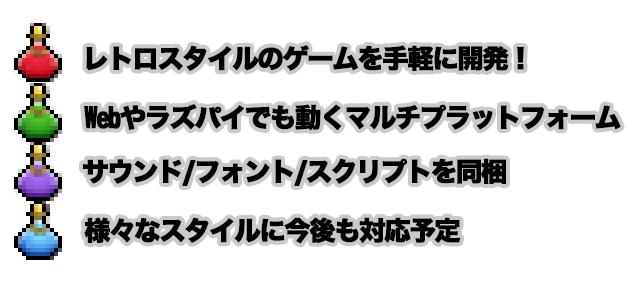
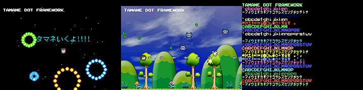
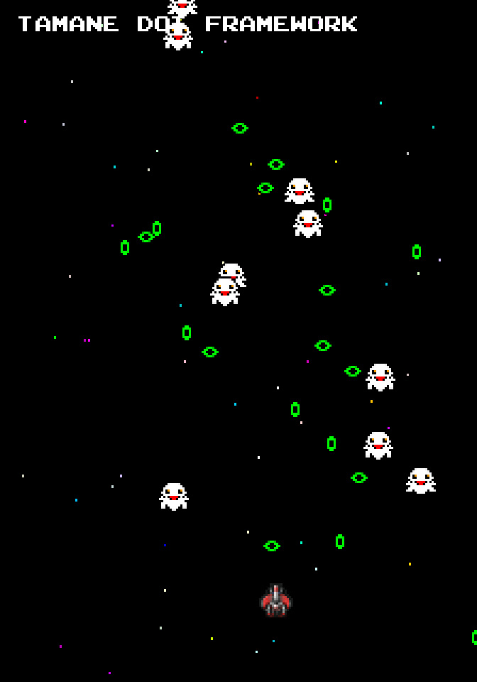
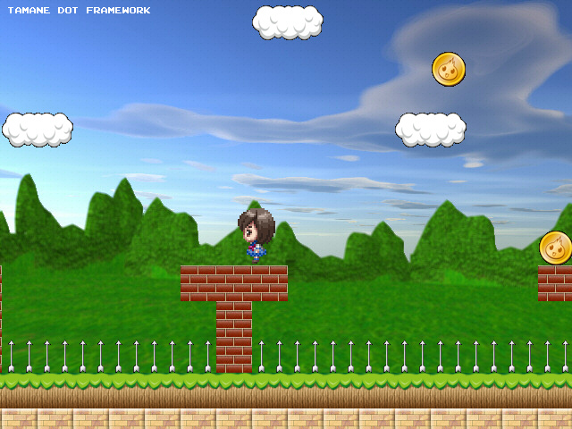
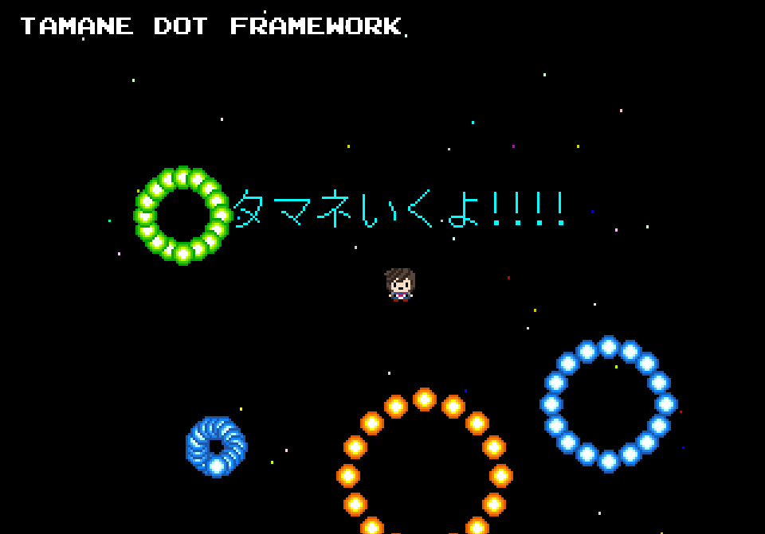
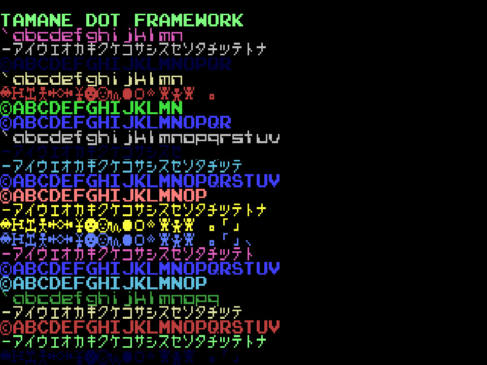

HSP : Hot Soup Processor ver3.7 / onion software 2022-(c)
珠音（たまね）ドットフレームワーク(β)


はじめに
「珠音（たまね）ドットフレームワーク」は、ドット絵のHSP3オフィシャル素材とHSP3Dish上で使用できるライブラリのセットです。
ゲームに特化したシンプルな命令セットとオールインワンの素材パッケージで手軽にレトロスタイルの自作ゲームを作り始めることが可能です。
作成したゲームは、WindowsだけでなくWebやラズパイ、Linux、android、iOSなどで発表することが可能です。
珠音（たまね）は、HSP3公式のマスコットキャラクターです。これまでにも、2D素材や3D素材が提供されてきました。また、Webブラウザで手軽に遊べるサンプルゲームもありますので、是非チェックしてみてください。

アーカイブに含まれるスクリプトは、Hot Soup Processor(HSP3)とともに使用することができます。画像やサウンドの素材は、自作のソフトに自由に組み込むことが可能です。
素材データ詳細
HSPオフィシャルキャラクター"珠音（たまね）"を元に作られた2D素材が含まれています。
「tamane16.png」ファイルが実際の画像データになります。
bmp形式とpng形式のファイルが用意されています。通常は、HSP3Dishで透明となるアルファチャンネル値が含まれているpng形式をご使用ください。

画像サイズは、128×128ドットで、16×16ドットの素材が横8パターン、縦8パターンずつ並べられています。
素材には、珠音ちゃんとモンスター、アイテムや爆発マークなどゲームで使用できる絵素材が含まれており、アイデア次第で様々な場面で使用することができます。
「tamane16.png」ファイルは、HSP3に限らず他のプログラミング環境でも自由にお使い頂けます。
モジュールの使用方法
「珠音ドットフレームワーク」は、HSP3.6以降で使用できるモジュールです。
HSP3Dishと標準スプライトをベースにして、ゲームで使用する汎用的な処理、効果、ジョイスティックのサポートなどをまとめています。
アーカイブに含まれている以下のファイルを、HSP3インストールフォルダ以下のcommonフォルダにコピーするか、実行するスクリプトと同じフォルダに配置してください。
dotfw.as ドットフレームワーク本体 mod_res.as 画像リソースマネージャー
コマンドのヘルプファイルが同梱されています。以下のファイルを、HSP3インストールフォルダ以下のhsphelpフォルダにコピーすることで[F1]キーによるヘルプを表示させることができます。
dotfw.hs ヘルプ用ファイル
スクリプトの基本
珠音ドットフレームワークを使用する際には、最初の行に
#include "dotfw.as"
を記述するだけです。
たとえば、以下の6行を追加するだけで基本的な画面の初期化、プレイヤーの表示、キーやジョイスティックによる操作、弾の発射などの処理がすべて行われます。
#include "dotfw.as" df_config "fc Z300 star" df_reset df_addplayer *main df_update goto *main
もちろんユーザーの記述次第で、特殊な動作やアクションの追加など独自の処理を追加することができます。また、HSP3Dishと標準スプライトに関する命令もすべて利用可能です。
同梱されているサンプル「fwtest??.hsp」のスクリプトをHSPスクリプトエディタ上で実行することで、テスト表示をすることができます。
使用する際の参考にしてみてください。

画面の初期化
珠音ドットフレームワークを使用する際には、最初に必ずdf_config命令による設定と、df_reset命令による初期化の実行が必要です。
df_config命令では、ドットフレームワークの設定をタグ文字列により行います。
スペースで区切られたタグ文字列を指定することで、必要な設定をすべてまとめて行うことができます。
df_config "X320 Y240 Z300 star" df_reset
上の霊では、(320×240)の300%(縦横3倍に拡大)した画面で表示を行う設定となります。 「star」タグを入れることで背景に星を流すことができます。 タグ文字列を記述する順番は問いません。
df_config "fc Z300" df_reset
上の例では、ファミコンを示す「fc」というタグが使用されています。
この場合は、(256×224)の300%(縦横3倍に拡大、やや横長のドット)として初期化されます。
このように、プリセットとして代表的なレトロゲーム機、パソコンなどの仕様をタグで指定することができます。(あくまでも代表的な解像度を再現するだけで、表示方法や色数などを再現するものではありません)
プリセットには以下のキーワードを指定することができます。
タグ文字列 内容 --------------------------------------------------------------- X??? ???=画面横サイズを設定する Y??? ???=画面縦サイズを設定する Z??? ???=ドットズーム値(%)を設定する A??? ???=ドットアスペクト比(%)を設定する F??? ???=フレームレート(fps)を設定する K??? ???=連射インターバルを設定する P??? ???=連続入力キー(0～3)を設定する V??? ???=バーチャルパッドオプション値を設定する fullscr フルスクリーンで表示する star 背景に星を表示する afont 8dotフォントタイプAを選択 bfont 8dotフォントタイプBを選択 cfont 8dotフォントタイプCを選択 vpad バーチャルパッドを表示する
画面の解像度を指定するタグには以下のキーワードを使用できます。
タグ文字列 内容 --------------------------------------------------------------- fc ファミコン(256×224) sfc スーパーファミコン(256×224) pce PCエンジン(320×224) md メガドライブ(320×224) gb ゲームボーイ(160×144) gba ゲームボーイアドバンス(240×160) nds ニンテンドーDS(256×192) 3ds ニンテンドー3DS(320×240) n64 ニンテンドー64(320×224) ngc ゲームキューブ(640×480) ss セガサターン(320×224) dc ドリームキャスト(640×480) ps1 プレイステーション1(320×240) ps2 プレイステーション2(640×480) psp PSP(480×272) vita PSP Vita(960×544) msx MSX(256×192) msx2 MSX2(512×424) appleii AppleII(280×192) c64 Commodore64(320×200) pc60 NEC PC-6001(256×192) pc80 NEC PC-8001(320×200) pc88 NEC PC-8801(640×200) pc98 NEC PC-9801(640×400) arcade 80年代の標準的な縦画面アーケード(224×320) neogeo ネオジオ(320×224)
表示要素
珠音ドットフレームワークが持つ表示の構成要素は、主に4つあります。
・背景(BG) ・プレイヤーキャラクター及びミサイル ・敵(エネミー)キャラクター及びミサイル ・エフェクト ・テキスト表示画面
現在のバージョンでは、シューティングゲームを作ることのできる基本的なパーツと処理が内蔵されています。 今後のバージョンでは、様々なスタイルのゲームに応じたプレイヤーと敵の処理が追加される予定です。
背景(BG)
背景として画像とマップデータ(.tmap)を表示させることができます。
df_celload id_bgpic,"yamabg16.png" df_setbgpic 0,id_bgpic df_bgscroll 0, DIR_LEFT, 50
上の例では、「yamabg16.png」という画像ファイルを背景として表示し、ゆっくりとスクロールするように設定しています。
背景には、複数の要素を表示することができます。
その場合は、0から始まるBG番号によって識別します。

df_loadbgmap 0, "test.tmap" df_bgpoint 0, 20,40
上の例では、「test.tmap」というマップファイルを背景として表示します。
df_bgpoint命令は、表示した背景の表示位置を指定します。上の例では、(20,40)の位置から表示することになります。

.tmapファイルは、HSP3付属のマップエディタで編集することができます。詳しくは、「マップエディタ Tamamap マニュアル」を参照してください。
基本キャラクター
珠音ドットフレームワークが持つ基本キャラクターは、「CHR_*」というマクロで定義され指定できるようになっています。 これは、「tamane16.png」ファイルに含まれているもので、アニメーションも含めて手軽にキャラクターとして登場させることができます。
| マクロ | 内容 |
|---|---|
| CHR_TAMANE | 珠音ちゃん(前向き) |
| CHR_TAMANE2～4 | 珠音ちゃん(他の方向向き) |
| CHR_MONSTER1～4 | モンスター |
| CHR_BOM | 爆発 |
| CHR_MISSILE | ミサイル(上向き) |
| CHR_MISSILE2 | ミサイル(右向き) |
| CHR_DOT1～4 | 小さいボール(4色分) |
| CHR_BALL1～4 | 大きいボール(4色分) |
| CHR_WAVE | ウエーブ(上向き) |
| CHR_SHIP1～3 | 自機 |
| CHR_SOUPCUP | スープカップ |
| CHR_HSED | HSPスクリプトエディタ |
| CHR_ONION | オニオンくん |
| CHR_LIGHT | 光のエフェクト |
| CHR_CIRCLE | 緑の楕円 |
| CHR_UFO | 単色のUFO |
| CHR_VADER | 単色のインベーダー |
| CHR_STONE1～4 | 魔法石(4色分) |
| CHR_COIN | コイン |
| CHR_BOX | 宝箱 |
| CHR_MEAT | 肉 |
| CHR_SWORD | 剣 |
| CHR_ITEM1～4 | ポーション(4色分) |
現在のバージョンでは、シューティングゲームを作ることのできる基本的なパーツと処理が内蔵されています。 今後のバージョンでは、様々なスタイルのゲームに応じたプレイヤーと敵の処理が追加される予定です。
プレイヤー
プレイヤーは、df_addplayer命令によって追加することができます。
df_addplayer p1,p2,p3,p4 p1(0) : X座標 p2(0) : Y座標 p3(0) : キャラクタNo. p4(0) : option値
(p1,p2)でプレイヤーの初期座標を指定します。指定を省略した場合は、画面中央になります。
p3パラメータは標準スプライトで使用するキャラクタNo.(「CHR_」で始まるマクロで定義されています)となります。
キャラクタは、標準スプライトのes_pat、es_patanim命令で独自に定義したキャラクタNo.を指定することもできます。
キャラクタNo.の指定を省略した場合は、珠音(CHR_TAMANE)が使用されます。
プレイヤーのキャラクターを追加すると、ユーザーがコントローラーで操作することができるようになります。さらに、アクションのボタンを押すとミサイルが発射されるように設定されます。
プレイヤーの動作設定は、df_pmode命令で行うことができます。
df_pmode p1,p2,p3 p1(0) : 動作モード p2(0) : X座標の移動速度 p3(0) : Y座標の移動速度
また、df_parea命令により移動範囲を限定することが可能です。
細かい動作を追加したい場合は、制御サブルーチンを追加して独自の処理を記述することができます。
df_paction *label,p1 *label : 制御サブルーチンのラベル p1(0) : プレイヤーアクション種別
p1パラメータでプレイヤーアクション種別を指定します。以下のマクロから種別を選ぶことができます。
マクロ名 種別 ---------------------------------------------- PACTION_CONTROL 毎フレームごとの動作 PACTION_KEY コントロール(操作)時(*) PACTION_BUTTON ボタン1を押した時(*) PACTION_BUTTON2 ボタン2を押した時 PACTION_BUTTON3 ボタン3を押した時 PACTION_MISS ミス時(やられた時)(*) PACTION_ITEM アイテム取得時 PACTION_MAPITEM マップアイテム取得時 PACTION_MAPNOTICE マップ設置情報取得時 (*)のある種別はデフォルトで標準的な動作が設定されています
制御サブルーチンは、標準的なプレイヤーの動作を置き換えるために使用します。
プレイヤーアクション種別が示す状況になった時に、指定された制御サブルーチンが呼び出されます。
制御サブルーチンの中では、状況に応じてスプライトやゲームの進行処理を進めることができます。
たとえば、プレイヤーを追加した際に自由に動かす操作が設定されていますが、PACTION_KEYの種別を指定して、制御サブルーチンを置き換えることで独自の移動プログラムに変更することができます。
ボタンを押してミサイルが発射される仕組みは、PACTION_BUTTONの種別で動作するプログラムが行っています。
追加で、PACTION_BUTTON2という種別の制御サブルーチンを設定することで、ボタン2を押した時に異なるミサイルを発射させるなどの動作を追加することができます。
制御サブルーチンを追加・変更することで、独自の動作をプレイヤーに加えることができます。
敵(エネミー)
敵(エネミー)は、df_addenemy命令によって追加することができます。
df_addenemy p1,p2,p3,p4 p1(0) : X座標 p2(0) : Y座標 p3(0) : キャラクタNo. p4(0) : 進行方向(DIR_*)
(p1,p2)の座標に敵(エネミー)を追加します。エネミーはプレイヤーに対して攻撃をするキャラクターとして設定されます。
p3パラメーターで最初に移動する方向を指定します。これは0から255までの値で方向を指定します。以下のマクロを指定することも可能です。
マクロ名 値 方向 --------------------------- DIR_UP 128 上 DIR_DOWN 0 下 DIR_LEFT 192 左 DIR_RIGHT 64 右
p4パラメーターで移動スピードを指定します。100を指定した場合に、1フレームに1ドットのスピードで移動することになります。
p4パラメーターを省略した場合は、df_emode命令で設定された値が適用されます。
生成されたエネミー(敵)は以下の情報を持っています。
情報 内容 ------------------------------------------------- X,Y座標 表示位置 移動方向 最初に移動する方向 移動スピード(%) 移動するスピード キャラクタNo. 表示されるキャラクター(*) 動作モード(0～) 動きを決定する値(*) 発射レート(%) 弾を発射する確率(*) インターバル 次の行動までのフレーム数(*) exprm値 モード制御に渡される値(*) option値 スプライトのオプション値(*) (*)が付加された項目は、df_emode命令で設定されたものが使用されます。
エネミー(敵)を追加するもう1つの方法として、df_enemygen命令が用意されています。 これは、決められた範囲にランダムに敵を生成する機能を持っています。 df_enemygen命令は、一定時間ごとに指定された確率で敵を生成します。生成されるエネミー(敵)は、座標と移動方向だけが設定されて、それ以外はdf_emode命令で設定されたパラメーターが使用されます。 p1パラメーターで生成する敵が最初に進む方向を指定します。
df_enemygen p1,p2,p3 p1(0) : 移動方向 p2(0) : 生成レート(%) p3(0) : インターバル
エネミー(敵)の動きを決定する最も重要な要素は、動作モードです。動作モードは、ドットフレームワークであらかじめ作成されているプリセットと、ユーザーが自由に作成できるものがあります。
プリセットされた動作モードは、「EMODE_」で始まるマクロが定義されています。
ユーザーが動作モードを作成する場合は、df_emodesub命令を使用します。
df_emodesub p1,*label p1(0) : 動作モード(0～) *label : 制御サブルーチンのラベル
df_emodesub命令は、エネミー(敵)の動作モードごとに処理される制御サブルーチンを設定します。
p1パラメータで動作モードを指定します。
エネミーの動作モード設定された時に、指定された制御サブルーチンがターンごとに呼び出されます。
制御サブルーチンの中では、状況に応じてエネミーの移動処理を進めることができます。
制御サブルーチン呼び出し時には自動的に以下の変数が設定されます。
変数名 内容 ---------------------------------------------- _dotfw_cursp カレントスプライトID _dotfw_curemode 現在の動作モード _dotfw_enemy_exprm exprm値
これ以外の情報は、df_getaxis、df_getenemyprm命令などで適宜変数として取得することができます。
敵(エネミー)シーケンス制御
シーケンス制御は、エネミーの動作で時間(フレーム)ごとにモードを切り替える仕組みです。
単一の動作モードではなく、時間ごとに複数のモードを切り替える際に使用することができます。
df_addseq命令で、シーケンス制御のためのデータを登録することができます。
シーケンス制御を有効にするには、df_emode命令で指定する動作モードに「EMODE_SEQ」とシーケンスIDを使用します。
たとえば、動作モードに「EMODE_SEQ+10」を指定した場合は、シーケンスID10のシーケンス制御が行われます。
df_addseq p1,p2,p3,p4 p1(0) : シーケンスID(0=新規) p2(0) : 動作モード(0～) p3(0) : タイマー値 p4(0) : exprm値
詳しくは、それぞれの命令ヘルプを参照してください。
BGマップとの連携

BGマップと連携することで、広い背景をスクロールさせたり、足場となる背景を使ったゲーム作りに応用することができます。
df_mapaction マップアクション設定 df_bgview プレイヤーのスクロール設定 df_loadbgmap BGマップのロード
これらの命令により、BGマップとの連携を設定することができます。
df_mapaction p1,p2,p3 マップアクション設定 p1(0) : BG番号(0～) p2(0) : 重力設定 p3(0) : ジャンプ力設定
この命令により、ドットフレームワークの動作モードをマップアクションに設定します。
以降は、BGマップに設定されたアトリビュート情報を元に当たり判定を行い、マップと連携した動作になります。
p1パラメーターでBG番号を指定します。BGには、あらかじめdf_loadbgmap命令によりマップ設定が行われている必要があります。
p2パラメーターで重力設定の値を指定します。下方向の重力を設定することでジャンプアクションの動作となります。
重力設定の値は、1フレームごとに加算される加速度で、65536で1ドット相当になります。
重力設定を0に指定した場合は、重力は発生しません。またジャンプなどの動作もなくなり、4方向自由に移動させることができるようになります。
p3パラメーターでプレイヤーのジャンプ力を設定します。重力設定と同様の単位になります。
マップアクションが設定されてからは、プレイヤーはスクロールするマップ内に連動して表示されることになります。
プレイヤーが適切に画面内に入るようスクロールを行う場合は、df_bgview命令を指定してください。
df_bgview p1,p2,p3,p4,p5,p6,p7 背景マップとプレイヤーのリンクを指定 p1(0) : BG番号(0～) p2(0) : X方向のスクロール開始位置レート(%) p3(0) : Y方向のスクロール開始位置レート(%) p4(0) : X方向のスクロール追従レート(%) p5(0) : Y方向のスクロール追従レート(%) p6(0) : X方向のスクロール開始位置調整 p7(0) : Y方向のスクロール開始位置調整
この命令により、マップ上に表示されるプレイヤーのリンク設定を行います。
以降は、プレイヤーが移動しても適切な位置にマップがスクロールし、画面中央に表示するよう調整されます。
p1パラメーターで0から始まるBGの番号を指定します。BG番号は複数の背景を識別する際に使用します。
(p2,p3)パラメーターで画面全体のサイズに対してスクロールを開始する位置のレート(%)を指定します。指定を省略した場合は、50%になります。
(p4,p5)パラメーターでスクロールが追従するレート(%)を指定します。0より大きい値を指定した場合は、スクロール開始範囲から出た場合でもゆっくりと追従するようになります。
(p6,p7)パラメーターでスクロール開始位置の微調整を行います。X,Y方向ごとにプレイヤーが中心となる位置を調整することができます。
背景のスクロールを特定の座標に固定する場合は、df_bgviewfix命令を使用することができます。
df_bgviewfix p1,p2,p3 背景マップの表示位置を固定する p1(0) : BG番号(0～) p2(0) : X方向のスクロール位置 p3(0) : Y方向のスクロール位置
BGマップと連携して重力を有効にすることで、手軽にジャンプアクションゲームを作成することができます。
その場合は、自動的にジャンプのボタン(キーボードの場合は[Z]キー)が割り当てられます。

BGマップと連携した場合は、マップのセルにイベント情報を設定して、ゲーム内で取得することが可能です。
BGマップ連携中は、df_getplayer命令により以下の情報を取得することができます。
変数名 内容 ---------------------------------------------- _dotfw_cursp プレイヤースプライトNo. _dotfw_myx X座標 _dotfw_myy Y座標 _dotfw_myani アニメーションカウンター _dotfw_mydir プレイヤーの向き _dotfw_myres プレイヤーの着地情報 _dotfw_myact プレイヤーの動作モード
これらの情報をもとに、プレイヤーがどのような状況なのかを取得することができます。 中でも、プレイヤーの着地情報には以下の情報が含まれています。
値 マクロ名 内容 -------------------------------------------------- 0x100 ESSPRES_XBLOCK X方向に衝突があった 0x200 ESSPRES_YBLOCK Y方向に衝突があった 0x400 ESSPRES_GROUND 重力方向の足場に接地している 0x800 ESSPRES_EVENT イベントのアトリビュートがあった
プレイヤーが移動した先にマップのイベント情報があった場合は、df_paction命令でPACTION_MAPITEMの制御サブルーチンを設定しておくことで細かい情報を取得できます。
この場合、制御サブルーチン側では以下の変数を使用することができます。
変数名 内容 ---------------------------------------------- _dotfw_curmapx 接触したマップのX座標 _dotfw_curmapy 接触したマップのY座標 _dotfw_curmapcel 接触したマップのセルID _dotfw_curmapattr 接触したマップのアトリビュート値
マップのイベント設定やアトリビュート値の詳細については、「標準スプライトプログラミングガイド」、及び「マップエディタ Tamamap マニュアル」を参照してください。
エフェクト
珠音ドットフレームワークでは、ゲームのキャラクターとは独立した形で画面の前面にエフェクト表示用のレイヤーがあり、各種エフェクト表示を行うことが可能です。
df_addeff 画像エフェクトを追加 df_addmes 専用フォントメッセージエフェクトを追加 df_addfmes メッセージ用エフェクトを追加 df_addbom 爆発エフェクトを追加する df_addfire 花火エフェクトを追加する
これらの命令により、随時画面上にエフェクトを追加することができます。
また、エフェクトの動きや表示時間を制御するための、df_efftimer、df_effmove、df_effanim命令が用意されています。
詳しくは、それぞれの命令ヘルプを参照してください。

テキスト表示画面
珠音ドットフレームワークでは、画面の最前面にテキスト表示用のレイヤーがあり、専用フォントによるテキスト表示を行うことが可能です。
ここでは、あらかじめ用意された8×8ドットの英文字フォントを利用することができます。これは3種類の中から選ぶことができ、df_config命令によって選択できます。
英文字やシンボルキャラクターを含む256種類の文字を16色で表示します。
テキスト画面のシフト(スクロール)やキャラクターの読み出しなどにも対応しています。

バーチャルパッド
初期化文字列に「vpad」を追加することで、バーチャルパッドを表示することができます。
#include "dotfw.as" df_config "pce Z300 vpad" df_reset df_addplayer *main df_update goto *main
バーチャルパッドはゲームなどで使用する4つの方向と4つのボタンを画面に表示してタッチ等で利用できるようにしたものです。 バーチャルパッドは画面のズーム(拡大率)に関係なく、標準的なドットで表示されます。 初期化文字列に「V4」などのオプション値を指定することで、バーチャルパッドの初期位置を調整することができます。
値 : 動作 ----------------------------------------------------- 1 : 移動とアクションボタンの位置を入れ替える 2 : バーチャルパッドの表示位置を画面上部にする 4 : バーチャルパッドの表示を移動のみにする
この値は、加算することで複数を選択することが可能です。
WebDishサービスからの使用
HSP3DishのスクリプトをWebで実行する、WebDishサービスでも素材データ「tamane16.png」を使用することができます。「珠音（たまね）ドットフレームワーク」に含まれるスクリプトライブラリにも今後対応する予定です。
著作権とライセンス
HSPオフィシャルキャラクター"珠音（たまね）"は、オガワコウサク(チームグリグリ)氏によりデザインされました。
「珠音（たまね）ドットフレームワーク」に含まれるデータ及び、付随するサンプルスクリプト・データは、
有償・無償を問わず添付、複製、改編、再配布することができます。ライセンス料は必要ありません。
(素材データの著作権に関する表記は、必須ではありません。)
ユーザーが2D素材 "珠音（たまね）"を組み込み、作成したオリジナルのソフトウェア(実行ファイル)の権利は、それを作成したユーザーに属します。
onion softwareは、本データによって生じた、いかなる損害についても保証いたしません。自己の責任の範囲で使用してください。
オガワコウサク(チームグリグリ)
http://www.gris2.com/